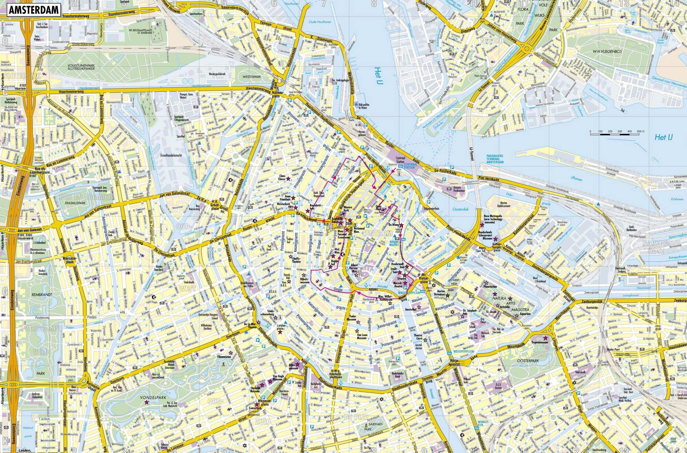
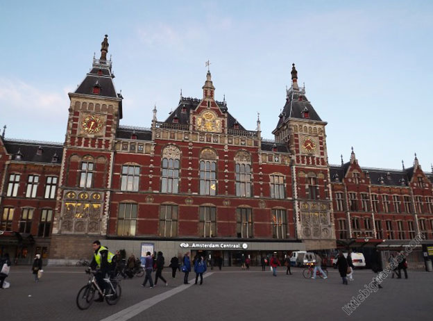

Местоположение

Намира се в провинцията Северна Холандия, в Рандстад, на устието на реката Амстел в Ай.
Амстердамското пристанище е свързано чрез Нордзееканал със Северно море. Към 1 януари 2018 г.
в града живеят 857 713 души. Градският район (Амстердам заедно с други прилежащи общини, виж Регионален орган Амстердам,
Алмере и др.) наброява повече от 1,5 милиона жители.
Към района може да се брои територията между Алкмаар, Занстад, Пюрмеренд, Алмере, Амстелвен, Хофддорп,
Харлем, Аймойден, Димен и Абкауде.
История
Амстердам започва като рибарско селище.
През 13 век е построен бентът (на нидерландски: dam),
от който Амстердам получава името си. Частта от реката от външната му страна, Дамрак,
е началото на амстердамското пристанище. В началото на 20 век са намерени останки от онзи бент
на сегашния площад Дам (площад), между Националния монумент и сградата на универсалния магазин „Бейенкорф“.
Най-старото споменаване на Амстердам е в документ от 27 октомври 1275 г., в
който граф Флорис V освобождава жителите от пътни такси. Има несигурност относно
точната дата, на която Амстердам получава статут на град, но според едно от предположенията
утрехтският епископ Ги ван Авен дава статут на град на селището през 1306 г. Всъщност не може да се
твърди нищо повече от това, че това е станало скоро след 1300
Забележителности
Амстердам е един от най-популярните туристически центрове в Европа. Ежегодно е посещаван от над 4,63 млн. туристи от други страни (2009 г.). Две трети от хотелите са разположени в центъра на града. На четири- и петзвездните хотели се падат около 42 % от всички спални места. Повечето туристи (74 %) пристигат от други европейски страни. Сред гостите от други държави най-голям дял са гражданите на САЩ (14 % от общото количество туристи).

- Музеят на Ван Гог
- Национален музей (Рейксмузеум / Rijksmuseum)
- Къщата на Ане Франк
- Футболния стадион на Аякс
- Де Вален - кварталът с Червените фенери
- Ермитажът
- Кралският дворец (Koninklijk Paleis Amsterdam)
- Оуде Керк (Oude Kerk)
- Площад Дам